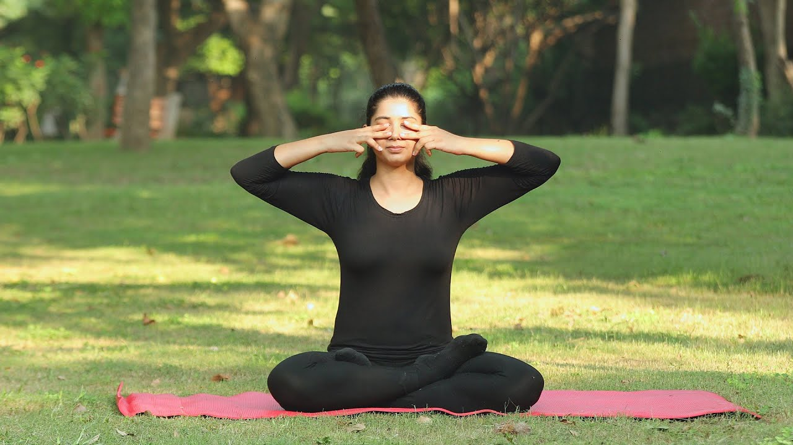

Shishuasana (Child Pose)
This pose helps a mind in gaining
positive energy and is Deeply
relaxing for the back and helps a patient to think in a good way again since it also calms down the nervous system.
USE
Sit on your heels. Keeping your hips on the
heels, bend forward, and lower your forehead to the floor.
Keep the arms alongside your body with hands
on the floor, palms facing up. (If this is not comfortable, you can place
one fist on top of another and rest your forehead on them.)
Gently press your chest on the thighs.
Hold.
Slowly come up to sit on the heels, by vertebra and relax.
PRECAUTIONS
In case of serious back or knee injuries avoid
this pose.
Pregnant women
should avoid doing this pose.
Avoid this pose if you suffering from are or had recently
suffered from diarrhea.
Halasana (Plow Pose)
This yoga pose gets its name from
the plow –
a popular farming tool commonly used in Indian agriculture to prepare the soil
for sowing crops. Like its namesake, this pose prepares the ‘field’ of the body and
mind for deep rejuvenation.
USE
Lie on your back with your arms beside you, palms downwards.
As you inhale, use your abdominal muscles to lift your feet off the floor, raising your legs vertically
at a 90-degree angle.
Continue to breathe normally and supporting your hips and back with
your hands, lift them off the ground.
Allow your legs to sweep in a 180-degree angle over your head till
your toes touch the floor. Your back should be perpendicular to the floor.
This may be difficult initially, but make an attempt for a few seconds.
Hold this pose and let your body relax more and more with each
steady breath.
After about a minute (a few seconds for beginners) of resting in
this pose, you may gently bring your legs down on exhalation.
PRECAUTIONS
Avoid practicing Plow Pose (Halasana) if you have injured your neck or are suffering from diarrhea and high
blood pressure.
Ladies should avoid practicing Plow
Pose (Halasana) during pregnancy
and during the first two days of their menstrual cycle.
Consult a doctor before practicing Plow Pose (Halasana) if you have
suffered from chronic diseases or spinal
disorders in
the recent past.
Nadi Shodhan Pranayama
Nadis are
in the human body that can get blocked due to various reasons. The Nadi
Shodhan pranayama is a breathing technique that
helps clear blocked energy channels(nadis), thus calming the mind. This
technique is also known as Anulom Vilom pranayama.
USE
Sit comfortably with your spine erect and
shoulders relaxed. Keep a gentle smile on your face.
Place your left hand on the left knee, and
palms open to the sky or in Chin Mudra (thumb and index finger gently
touching at the tips).
Place the tip of the index finger and middle
finger of the right hand in between the eyebrows, the ring finger and
little finger on the left nostril, and the thumb on the right nostril. We
will use the ring finger and little finger to open or close the left
nostril and thumb for the right nostril.
Press your thumb down on the right nostril and
breathe out gently through the left nostril.
Now breathe in from the left nostril and then
press the left nostril gently with the ring finger and little finger.
Removing the right thumb from the right nostril, breathe out from the
right.
Breathe in from the right nostril and exhale from the left. You
have now completed one round of Nadi
Shodhan pranayama.
Continue inhaling and exhaling from alternate nostrils.
Complete 9 such rounds by alternately
breathing through both the nostrils. After every exhalation, remember to
breathe in from the same nostril from which you exhaled. Keep your eyes
closed throughout and continue taking long, deep, smooth breaths without
any force or effort.
PRECAUTIONS
There are absolutely no side
effects of practicing nadi shodhan pranayama. And anyone can perform it.
Savasana (Corpse Pose)
This pose gets its name from the recumbent posture of a dead body. It is a position of rest and relaxation, and is usually practiced towards the end of a yoga session – a session that typically begins with activity and ends in rest; a space or pause when deep healing can take place.
USE
Lie flat on your back, preferably without any
props or cushions. Use small pillow below your neck if absolutely
required. Close your eyes.
Keep your legs comfortable apart and let your feet
and knees relax completely, toes facing to the sides.
Place your arms alongside, yet a little spread
apart from your body. Leave your palms open, facing upward.
Taking your attention to different body parts
one by one, slowly relax your entire body.
Begin with bringing your awareness to the
right foot, move on to the right knee (as you complete one leg, move your
attention on to the other leg), and so on, and slowly move upwards to your
head, relaxing each part of the body.
Keep breathing slowly, gently, deeply and
allow your breath to relax you more and more. The incoming breath
energizes the body while the outgoing breath brings relaxation. Drop all
sense of hurry or urgency or any need to attend to anything else. Just be
with the body and the breath. Surrender the whole body to the floor and
let go. Make sure you don’t fall asleep!
After some time, about 10-20minutes when you feel fully relaxed,
keeping your eyes closed, slowly roll onto your right side. Lie in that
position for a minute or so. Then, taking the support of your right hand,
gently sit up into a seated pose such as Sukhasana (Easy Pose).
Keep your eyes closed and take a few deep
breaths in and out as you gradually become aware of your environment and
the body. When you feel complete, slowly and gently open your eyes.
PRECAUTIONS
Backpain Suffering patients should
avoid.
Bhramari Pranayama (Humming Bee Breathing Excercise)
 The Bhramari pranayama breathing
technique derives its name from the
black Indian bee called Bhramari. Bhramari pranayama is
effective in instantly calming down the mind. It is one of the best breathing
exercises to free the mind of agitation, frustration or anxiety.
USE
Sit up straight in a quiet, well-ventilated corner with your eyes
closed. Keep a gentle smile on your face.
Keep your eyes closed for some time. Observe the sensations in the
body and the quietness within.
Place your index fingers on your ears. There is a cartilage between
your cheek and ear. Place your index fingers on the cartilage.
Take a deep breath in and as you breathe out, gently press the
cartilage. You can keep the cartilage pressed or press it in and out with
your fingers while making a loud humming sound like a bee.
You can also make a low-pitched sound but it is a good idea to make
a high-pitched one for better results.
Breathe in again and continue the same pattern 3-4 times.
PRECAUTIONS
Ensure that you are not putting your finger
inside the ear but on the cartilage.
Don’t press the cartilage too hard. Gently
press and release with the finger.
Do not put pressure on your face.
Do not exceed the recommended repetitions of
3-4 times.

“When you listen to yourself, everything comes naturally. It comes from inside, like a kind of will to do something. Try to be sensitive. That is yoga.”
― Petri Räisänen